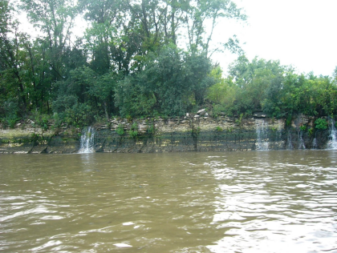

Lakewide Management Plan Capacity Support by USGS
Template #164

US Geological Survey expertise, capacity and support for the Great Lakes Lakewide Programs in the implementation of Lakewide Management Plans, their associated goals, objectives and targets for Lakes Superior, Michigan, Huron, Erie and Ontario.
The project continued to support coordinating activities with EPA-GLNPO, CSMI and tribal partners. Efforts included compiling monitoring information into the Great Lakes web mapper (mapper) and support of summary publications describing the status of monitoring data for each lake. Emphasis was placed on extending work for the Lake Michigan data mapper to the other Great Lakes. The goal of the mapper is to focus on compilation of information that will result in recognition of areas where data are being collected, missing, or sparse, and on areas where ecosystems are vulnerable. The mapper will assist decision making related to protecting and restoring ecosystems.
Scientists worked closely with partners to assure that products and results are applicable and useful. The efforts included coordination with tribal natural resources departments, the USEPA, state agencies, and LaMPs to assure that products and results are applicable and useful. A USGS steering committee, representing each of the lakes, was formed. Activities of individual USGS Science Centers included coordinating with partners in each of the Great Lakes and support for sampling and monitoring activities.
For Lake Huron, emphasis focused on issues affecting fisheries and nutrient inputs, particularly in the Saginaw basin, and on the development of the mapper to assist partners in making management decisions. For Lake Superior, emphasis was on support of activities with partners in compiling data and on collecting data focused on Areas of Concern, nutrients and areas with potential for mining. For Lake Michigan, efforts included continued compilation of monitoring information into the mapper and support of a near-shore framework white paper. In Lake Erie, emphasis was placed on coordinating activities with partners and on compiling data for the mapper. For Lake Ontario, work has consisted primarily of coordinating activities with the EPA on de-lising project at Areas of Concern sites. Actives of the Great Lakes Science Center include coordinating activities with partners in each of the Great Lakes and on support for near-shore sampling and monitoring activities.
To provide USGS expertise, capacity, and support for the Great Lakes Lakewide Programs for all of the Great Lakes and their connecting channels.
USGS Lakewide Management Plan capacity support would include participation in
LaMP processes, programs, conferences, workshops and projects, including the
development of LaMP documents, and updates. Specifically, USGS staff would
participate in and serve on
workgroup and technical committees, including attending meetings and workshops
as necessary. USGS would also participate in Management-level meetings and
committees as appropriate. USGS would also undertake and participate in
interagency actions that implement LaMP programs and priorities and would help
incorporate LaMP goals in USGS planning
efforts.
James Stark, stark@usgs.gov and Russell Strach, rstrach@usgs.gov for Lake Superior
Charles Peters, capeters@usgs.gov and Russell Strach, rstrach@usgs.gov for Lake Michigan
James Nicholas, jrnichol@usgs.gov and Russell Strach, rstrach@usgs.gov for Lake Huron
James Morris, jrmorris@usgs.gov and Russell Strach, rstrach@usgs.gov for Lake Erie
Edward Bugliosi, ebuglios@usgs.gov and Russell Strach, rstrach@usgs.gov for Lake Ontario